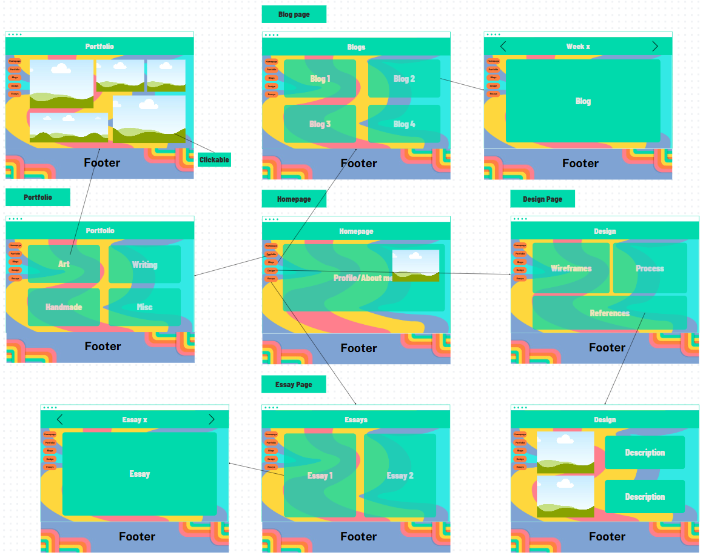
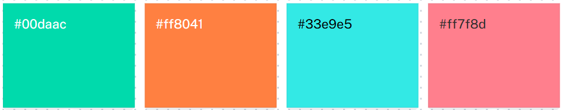
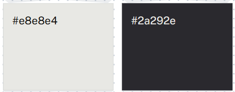
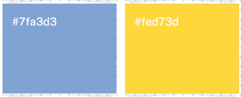

Process
Week 1: Added the base of the website, aka the homepage and blog page.Week 2: Added the content of the first two blogs.
Week 3: Hyperfixated on the subject and reorganized the entire file structure. Added third blog. First wireframes were made.
Week 4: Added 4th blog. Redid the wireframes.
Week 5: Made the style guide. Fixed some problems with the links. Made the whole thing usable through GitHub, because it was being difficult.
Style Guide:
Interaction flowchart

User flow

Primary Colour palette

Neutral colours

Tersiary colours

Font choice: Headings: Bradley Hand ITC Body: Baskerville
Icon style: Outlined so that it stands out against the colourfule background. Maybe pixelated.
Do's:
Keep the navigation bar in a hamburger menu.
Keep the footers at the bottom.
Align the images as a collage.
Don'ts:
Forget to reference.
Stop believing.
Buttons: Will swell when mouse hovers over it and lighten when clicked.
Quick questions to ponder later:
Do I make my images a download button?
If I do that then I'll need to add a watermark to the images, but what? A logo?